Bayes AI
Unit 7: Bayesian Regression: Linear and Bayesian Trees
Vadim Sokolov
George Mason University
Spring 2025
Temporal Data: Filtering, Event Detection, Pandemics
Example: History of Pandemics
Bill Gates: 12/11/2009: “I’m most worried about a worldwide Pandemic”
| Early-period Pandemics | Dates | Size of Mortality |
|---|---|---|
| Plague of Athens | 430 BC | 25% population. |
| Black Death | 1347 | 30% Europe |
| London Plague | 1666 2 | 0% population |
| Recent Flu Epidemics | Dates 1900-2010 | Size |
|---|---|---|
| Spanish Flu | 1918-19 40- | 50 million |
| Asian Flu | H2N2, 1957-58 2 | million |
| Hong Kong Flu | H3N2, 1968-69 6 | million |
Spanish Flu killed more than WW1
H1N1 Flu 2009: \(18,449\) people killed World wide:
SEIR Epidemic Models
Growth “self-reinforcing”: More likely if more infectants
An individual comes into contact with disease at rate \(\beta_1\)
The susceptible individual contracts the disease with probability \(\beta_2\)
Each infectant becomes infectious with rate \(\alpha\) per unit time
Each infectant recovers with rate \(\gamma\) per unit time
\(S_t + E_t + I_t + R_t = N\)
Current Models: SEIR
susceptible-exposed-infectious-recovered model
Dynamic models that extend earlier models to include exposure and recovery.
The coupled SEIR model:
\(\dot{S} = -\beta S I\)
\(\dot{E} = \beta S I - \alpha E\)
\(\dot{I} = \alpha E -\gamma I\)
\(\dot{R} = \gamma I\)
Infectious disease models
Daniel Bernoulli’s (1766) first model of disease transmission in smallpox:
“I wish simply that, in matters which so closely concern the well being of the human race, no decision shall be made without all knowledge which a little analysis and calculation can provide”
- R.A. Ross, (Nobel Medicine winner, 1902) – math model of malaria transmission, which ultimately lead to malaria control.
Ross-McDonald model
- Kermack and McKendrick: susceptible-infectious-recovered (SIR)
London Plague 1665-1666; Cholera: London 1865, Bombay, 1906.
Example: London Plague, 1666: Village Eyam nr. Sheffield
Model of transmission from Infectants, \(I\), to susceptibles, \(S\).
| Date 1666 Su | sceptibles In | fectives |
|---|---|---|
| Initial | 254 | 7 |
| July 3 | 235 15 | |
| July 19 | 201 22 | |
| Aug 3 1 | 53 29 | |
| Aug 19 | 121 21 | |
| Sept 3 | 108 8 | |
| Sept 19 | 97 8 | |
| Oct 3 | – | – |
| Oct 19 | 83 0 |
Initial Population \(N=261=S_0\); Final population \(S_\infty = 83\).
Modeling Growth: SI
Coupled Differential eqn \(\dot{S} = - \beta SI , \dot{I} = ( \beta S - \alpha ) I\)
- Estimates \(\frac{\beta}{\alpha} = 6.54 \times 10^{-3} , \frac{\alpha}{\beta} = 1.53\).
\[ \frac{ \hat{\beta} }{\alpha} = \frac{ \ln ( S_0 / S_\infty ) }{S_0 - S_\infty} \] Predicted maximum \(30.4\), very close to observed 29
Key: \(S\) and \(I\) are observed and \(\alpha , \beta\) are estimated in hindsight
Transmission Rates \(R_0\) for 1918 Episode
- 1918-19 influenza pandemic:
| Mills et al. 2004: | 45 US cities | 3 (2-4) |
| Viboud et al. 2006: | England and Wales | 1.8 |
| Massad et al. 2007: | Sao Paulo Brazil | 2.7 |
| Nishiura, 2007: | Prussia, Germany | 3.41 |
| Chowell et al., 2006: | Geneva, Switzerland | 2.7-3.8 |
| Chowell et al., 2007: | San Francisco | 2.7-3.5 |
The larger the \(R_0\) the more severe the epidemic.
Transmission parameters vary substantially from epidemic to epidemic
Boat Localization Example
Localization with measurement update
A boat sails from one island to another
Boat is trying to identify its location \(\theta \sim N(m_0, C_0)\)
Using a sequence of measurements to one of the islands \(x_1,\ldots,x_n\)
Measurements are noisy due to dilution of precision http://www.sailingmates.com/your-gps-can-kill-you/
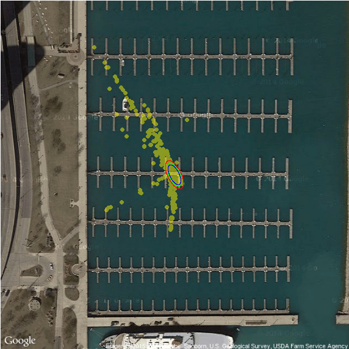
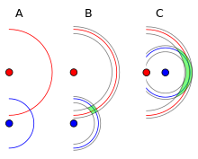
Reckoning
Localization with no measurement updates is called reckoning

source: http://www.hakaimagazine.com/article-short/traversing-seas
Kalman Filter
\[
\theta \sim N(m_0, C_0)
\] \[
x_t = \theta + w_t,~~~w_t \sim N(0,\sigma^2)
\] \[
x_1,x_2,\ldots \mid \theta \sim N(\theta,\sigma^2)
\] The prior variance \(C_0\) might be quite large if you are very uncertain about your guess \(m_0\)
Given the measurements \(x^n = (x_1,\ldots,x_n)\), you update your opinion about \(\theta\) computing its posterior density, using the Bayes formula
Normal Model
\[ f(x) = \dfrac{1}{\sqrt{2 \pi \sigma^2}} \exp^{-\dfrac{1}{2}\dfrac{(x-\mu)^2}{\sigma^2}} \] Or multivariate equivalent \[ f(x) = (2 \pi)^{-k/2} |\Sigma|^{-1/2}\exp^{-0.5(x-\mu)^T\Sigma^{-1}(x-\mu)} \]
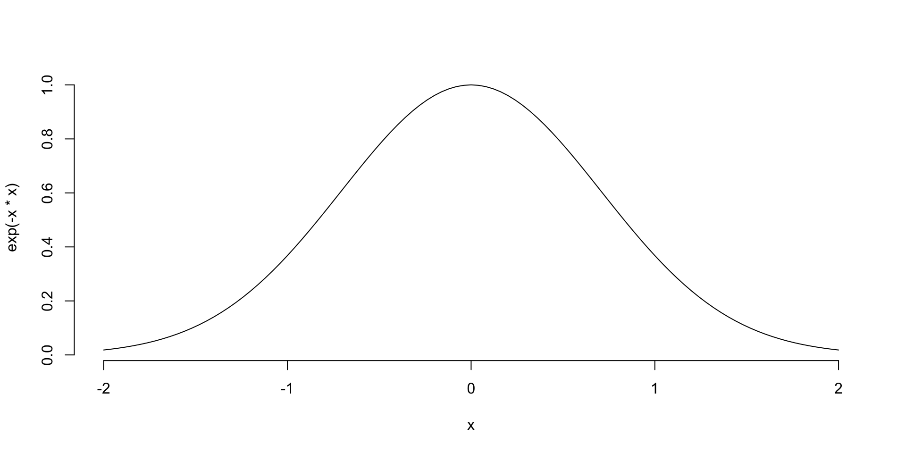The Conjugate Prior for the Normal Distribution
We will look at the Gaussian distribution from a Bayesian point of view. In the standard form, the likelihood has two parameters, the mean \(\mu\) and the variance \(\sigma^2\) \[ p(x^n | \mu, \sigma^2) \propto \dfrac{1}{\sigma^n}\exp\left(-\dfrac{1}{2\sigma^2}\sum_{i=1}^n(x_i-\mu)^2\right) \]
Normal Prior
In case when we know the variance \(\sigma^2\), but do not know mean \(\mu\), we assume \(\mu\) is random. To have conjugate prior we choose \[ p(\mu | \mu_0, \sigma_0) \propto \dfrac{1}{\sigma_0}\exp\left(-\dfrac{1}{2\sigma_0^2}(\mu-\mu_0^2)\right) \] In practice, when little is known about \(\mu\), it is common to set the location hyper-parameter to zero and the scale to some large value.
Normal Model with Unknown Mean, Known Variance
Suppose we wish to estimate a model where the likelihood of the data is normal with an unknown mean \(\mu\) and a known variance \(\sigma^2\).
Our parameter of interest is \(\mu\). We can use a conjugate Normal prior on \(\mu\), with mean \(\mu_0\) and variance \(\sigma_0^2\). \[
\begin{aligned}
p(\mu| x^n, \sigma^2) & \propto p(x^n | \mu, \sigma^2)p(\mu) ~~~\mbox{(Bayes rule)}\\
N(\mu_1,\tau_1) & = N(\mu, \sigma^2)\times N(\mu_0, \sigma_0^2)
\end{aligned}
\]
Useful Identity
One of the most useful algebraic tricks for calculating posterior distribution is completing the square.
\[ \dfrac{(x-\mu_1)^2}{\sigma_1} + \dfrac{(x-\mu_2)^2}{\sigma_2} = \dfrac{(x - \mu_3)^2}{\sigma_3} + \dfrac{(\mu_1-\mu_2)^2}{\sigma_1 + \sigma_2} \] where \[ \mu_3 = \sigma_3 (\mu_1/\sigma_1 + \mu_2/\sigma_2) \] and \[ \sigma_3 = (1/\sigma_1 + 1/\sigma_2)^{-1} \]
Prior: \[ \theta \sim \frac{e^{-\frac{(\theta-\mu )^2}{2 \sigma ^2}}}{\sqrt{2 \pi } \sigma } \] Likelihood: \[ x \mid \theta \sim \frac{e^{-\frac{(\theta-y )^2}{2 r^2}}}{\sqrt{2 \pi } r} \] Posterior mean: \[ \frac{x \sigma ^2+\mu r^2}{r^2+\sigma ^2} \] Posterior variance: \[ \frac{1}{\frac{1}{r^2}+\frac{1}{\sigma ^2}} \]
Prior, Likelihood, Posterior
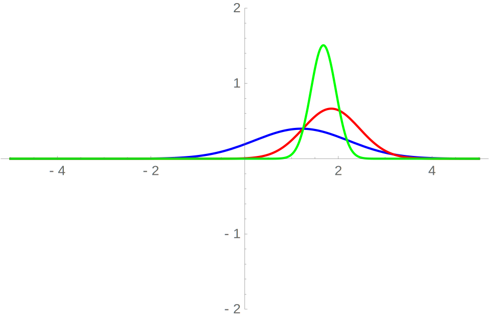After \(n\) steps
\[ \begin{aligned} p(\mu | x^n) & \propto \prod_{i=1}^{n}\dfrac{1}{\sqrt{2\pi \sigma^2}}\exp\left(-\frac{(x_i - \mu )^2}{2\sigma^2}\right)\times\dfrac{1}{\sqrt{2\pi \sigma_0^2}}\exp\left(-\frac{(\mu - \mu_0)^2}{2\sigma_0^2}\right)\\ & \propto \exp\left(-\sum_{i=1}^{n}\frac{(x_i - \mu )^2}{2\sigma^2} - \frac{(\mu - \mu_0)^2}{2\sigma_0^2}\right)\\ & = \exp\left(-\dfrac{1}{2}\left[\sum_{i=1}^{n}\frac{(x_i - \mu )^2}{\sigma^2} + \frac{(\mu - \mu_0)^2}{\sigma_0^2}\right]\right)\\ & = \exp\left(-\dfrac{1}{2\sigma^2 \sigma_0^2}\left[\sigma_0^2\sum_{i=1}^{n}(x_i - \mu )^2 + \sigma^2 (\mu - \mu_0)^2\right]\right)\\ & = \exp\left(-\dfrac{1}{2\sigma^2 \sigma_0^2}\left[\sigma_0^2\sum_{i=1}^{n}(x_i^2 - 2\mu x_i+ \mu ^2) + \sigma^2 (\mu ^2 - 2\mu \mu_0 + \mu_0^2)\right]\right)\\\end{aligned} \]
After \(n\) steps
We can multiply the \(2\mu x_i\) term in the summation by \(n/n\) in order to get the equations in terms of the sufficient statistic \(\bar{x}^n\) \[ \begin{aligned} p(\mu | x^n) & \propto \exp\left(-\dfrac{1}{2\sigma^2 \sigma_0^2}\left[\sigma_0^2\sum_{i=1}^{n}(x_i^2 - \dfrac{n}{n}2\mu x_i+ \mu ^2) + \sigma^2 (\mu ^2 - 2\mu \mu_0 + \mu_0^2)\right]\right)\\ & = \exp\left(-\dfrac{1}{2\sigma^2 \sigma_0^2}\left[\sigma_0^2\sum_{i=1}^{n}x_i^2 - \sigma_0^22\mu n\bar{x}^n+ \tau_n^0n\mu ^2 + \sigma^2 \mu ^2 - 2\mu \mu_0\sigma^2 + \mu_0^2\sigma^2\right]\right)\end{aligned} \] set \(k = \sigma_0^2\sum_{i=1}^{n}x_i^2 + \mu_0^2\sigma^2\) (they do not contain \(\mu\)) \[ p(\mu | x^n) \propto \exp\left(-\dfrac{1}{2}\left[\mu ^2\left(\dfrac{1}{\sigma_0^2} + \dfrac{n}{\sigma^2}\right) - 2\mu\left(\dfrac{\mu_0}{\sigma_0^2} + \dfrac{n\bar{x}^n}{\sigma^2}\right) + k\right]\right) \]
After \(n\) steps
Let’s multiply by \[ \dfrac{1/\sigma_0^2 + n/\sigma^2}{1/\sigma_0^2 + n/\sigma^2} \] Now \[ p(\mu | x^n) \propto \exp\left(-\dfrac{1}{2}\left(1/\sigma_0^2 + n/\sigma^2\right)\left(\mu - \dfrac{\mu_0/\sigma_0^2 + n\bar{x}^n/\sigma^2}{1/\sigma_0^2 + n/\sigma^2}\right)^2\right) \]
\[ p(\mu | x^n) \propto \exp\left(-\dfrac{1}{2}\left(1/\sigma_0^2 + n/\sigma^2\right)\left(\mu - \dfrac{\mu_0/\sigma_0^2 + n\bar{x}^n/\sigma^2}{1/\sigma_0^2 + n/\sigma^2}\right)^2\right) \]
After \(n\) steps
Posterior mean: \(\mu_n = \dfrac{\mu_0/\sigma_0^2 + n\bar{x}^n/\sigma^2}{1/\sigma_0^2 + n/\sigma^2}\)
Posterior variance: \(\sigma_n^2 = \left(1/\sigma_0^2 + n/\sigma^2\right)^{-1}\)
Posterior precision:: \(\tau_n^2 = 1/\sigma_0^2 + n/\sigma^2\)
Posterior Precision is just the sum of the prior precision and the data precision.
Posterior Mean
\[ \begin{aligned} \mu_n & = \dfrac{\mu_0/\sigma_0^2 + n\bar{x}^n/\sigma^2}{1/\sigma_0^2 + n/\sigma^2}\\ & = \dfrac{\mu_0\sigma^2}{\sigma^2 + n\sigma_0^2} + \dfrac{\sigma_0^2n\bar{x}^n}{\sigma^2 + n\sigma_0^2}\end{aligned} \]
As \(n\) increases, data mean dominates prior mean.
As \(\sigma_0^2\) decreases (less prior variance, greater prior precision), our prior mean becomes more important.
A state space model
A state space model consists of two equations: \[ \begin{aligned} Z_t&=HS_t+w_t\\ S_{t+1} &= FS_t + v_t\end{aligned} \] where \(S_t\) is a state vector of dimension \(m\), \(Z_t\) is the observed time series, \(F\), \(G\), \(H\) are matrices of parameters, \(\{w_t\}\) and \(\{v_t\}\) are \(iid\) random vectors satisfying \[ \mbox{E}(w_t)=0, \hspace{0.5cm} \mbox{E}(v_t)=0, \hspace{0.5cm}\mathrm{cov}(v_t)=V, \hspace{0.5cm} \mathrm{cov}(w_t)=W \] and \(\{w_t\}\) and \(\{v_t\}\) are independent.
State Space Models
State space models consider a time series as the output of a dynamic system perturbed by random disturbances.
Natural interpretation of a time series as the combination of several components, such as trend, seasonal or regressive components.
Computations can be implemented by recursive algorithms.
Types of Inference
Model building versus inferring unknown variable. Assume a linear model \(Z = HS + \epsilon\)
Model building: know signal \(S\), observe \(Z\), infer \(H\) (a.k.a. model identification, learning)
Estimation: know \(H\), observe \(Z\), estimate \(S\)
Hypothesis testing: unknown takes one of few possible values; aim at small probability of incorrect decision
Estimation: aim at a small estimation error
Time Series Estimation Tasks
Filtering: To recover the state vector \(S_t\) given \(Z^t\)
Prediction: To predict \(S_{t+h}\) or \(Z_{t+h}\) for \(h > 0\), given \(Z^t\)
Smoothing: To estimate \(S_t\) given \(Z^T\) , where \(T > t\)
Property of Multivariate Normal
Under normality, we have
that normal prior plus normal likelihood results in a normal posterior,
that if the random vector \((X, Y )\) are jointly normal
\[ \begin{bmatrix} X\\ Y \end{bmatrix} \sim N\left( \begin{bmatrix} \mu_x\\ \mu_y \end{bmatrix}, \begin{bmatrix} \Sigma_{xx}&\Sigma_{xy}\\ \Sigma_{yx}&\Sigma_{yy}\\ \end{bmatrix}\right), \]
- then the conditional distribution of \(X\) given \(Y = y\) is normal
\[ X|Y = y\sim N\left[\mu_x+\Sigma_{xy}\Sigma_{yy}^{-1}(y-\mu_y),\Sigma_{xx}-\Sigma_{xy}\Sigma_{yy}^{-1}\Sigma_{yx}\right]. \]
From State Space Model
\[ \begin{aligned} S_{t+1}^t &= FS_t\\ Z_{t+1}^t &=HS_{t+1}^t\\ P_{t+1}^t&=FP_tF^T+GQG^T\\ V_{t+1}^t&=HP_{t+1}^tH^T+R\\ C_{t+1}^t&=HP_{t+1}^t \end{aligned} \]
\(P_{t+j}^t\) = conditional covariance matrix of \(S_{t+j}\) given \(\{Z_t , Z_{t-1} , \cdots\}\) for \(j \geq 0\)
\(S_{t+j}^t\) = conditional mean of \(S_{t+j}\) given \(\{Z_t , Z_{t-1} , \cdots\}\)
\(V_{t+1}^t\) = conditional variance of \(Z_{t+1}\) given \(Z^t = \{Z_t , Z_{t-1} , \cdots\}\)
\(C_{t+1}^t\) = conditional covariance between \(Z_{t+1}\) and \(S_{t+1}\)
Joint conditional distribution \(P(S_{t+1}, Z_{t+1} | Z^t)\)
\[ \begin{bmatrix} S_{t+1}\\ Z_{t+1} \end{bmatrix}_t \sim N \left( \begin{bmatrix} S_{t+1}^t\\ Z_{t+1}^t \end{bmatrix}, \begin{bmatrix} P_{t+1}^t & P_{t+1}^tH'\\ HP_{t+1}^t & HP_{t+1}^tH'+R \end{bmatrix} \right) \]
\(P(S_{t+1}| Z_{t+1})\)
Finally, when \(Z_{t+1}\) becomes available, we may use the property of nromality to update the distribution of \(S_{t+1}\) . More specifically, \[ S_{t+1}=S_{t+1}^t+P_{t+1}^tH^T[HP_{t+1}^tH^T+R]^{-1}(Z_{t+1}-Z_{t+1}^t) \] and \[ P_{t+1}=P_{t+1}^t-P_{t+1}^tH^T[HP_{t+1}^tH'+R]^{-1}HP_{t+1}^t. \] Predictive residual: \[ R_{t+1}^t=Z_{t+1}-Z_{t+1}^t=Z_{t+1}-HS_{t+1}^t \ne 0 \] means there is new information about the system so that the state vector should be modified. The contribution of \(r_{t+1}^t\) to the state vector, of course, needs to be weighted by the variance of \(r_{t+1}^t\) and the conditional covariance matrix of \(S_{t+1}\).
Kalman filter
Predict: \[ \begin{aligned} S_{t+1}^t &= FS_t\\ Z_{t+1}^t &=HS_{t+1}^t\\ P_{t+1}^t&=FP_tF^T+GQG^T\\ V_{t+1}^t&=HP_{t+1}^tH^T+R \end{aligned} \]
Update: \[ \begin{aligned} S_{t+1|t+1}=& S_{t+1}^t+P_{t+1}^tH^T[HP_{t+1}^tH^T+R]^{-1}(Z_{t+1}-Z_{t+1}^t)\\ P_{t+1|t+1}=& P_{t+1}^t-P_{t+1}^tH^T[HP_{t+1}^tH^T+R]^{-1}HP_{t+1}^t \end{aligned} \]
Kalman filter
starts with initial prior information \(S_{0}\) and \(P_{0}\)
predicts \(Z_{1}^0\) and \(V_{1}^0\)
Once the observation \(Z_1\) is available, uses the updating equations to compute \(S_{1}\) and \(P_{1}\)
\(S_{1|1}\) and \(P_{1|1}\) is the prior for the next observation.
This is the Kalman recusion.
Kalman filter
effect of the initial values \(S_{0}\) and \(P_{0}\) is decresing as \(t\) increases
for a stationary time series, all eigenvalues of the coefficient matrix \(F\) are less than one in modulus
Kalman filter recursion ensures that the effect of the initial values indeed vanishes as \(t\) increases
uncertainty about the state is always normal
Local Trend Model
\[ \begin{aligned} y_t =& \mu_t + e_t,~e_t \sim N(0,\sigma_e^2)\\\ \mu_{t+1} =& \mu_t + \eta_t,~ \eta_t \sim N(0,\sigma_{\eta}^2 ) \end{aligned} \]
\(\{e_t\}\) and \(\{\eta_t\}\) are iid Gaussian white noise
\(\mu_0\) is given (possible as a distributed value)
trend \(\mu_t\) is not observable
we observe some noisy version of the trend \(y_t\)
such a model can be used to analyze realized volatility: \(\mu_t\) is the log volatility and \(y_t\) is constructed from high frequency transactions data
Local Trend Model
\[ \begin{aligned} y_t =& \mu_t + e_t,~e_t \sim N(0,\sigma_e^2)\\\ \mu_{t+1} =& \mu_t + \eta_t,~ \eta_t \sim N(0,\sigma_{\eta}^2 ) \end{aligned} \]
if \(\sigma_e=0\), then we have ARIMA(0,1,0) model
if \(\sigma_e > 0\), then we have ARIMA(0,1,1) model, satisfying
\[ (1-B)y_t = (1-\theta B)a_t, ~ a_t \sim N(0,\sigma_a^2) \] \(\sigma_a\) and \(\theta\) are determined by \(\sigma_e\) and \(\sigma_{\eta}\) \[ (1-B)y_t = \eta_{t-1} + e_t - e_{t-1} \]
Liner Regression (time dependent parameters)
\[ \begin{aligned} y_t &= \alpha_t + \beta_t \, x_t + \epsilon_t \qquad & \epsilon_t \, \sim N(0,\sigma^2) \\ \alpha_t &= \quad \alpha_{t-1} + \epsilon_t^{\alpha} \qquad & \epsilon_t^{\alpha} \sim N(0,\sigma_{\alpha}^2) \\ \beta_t &= \quad \beta_{t-1} + \epsilon_t^{\beta} \qquad & \epsilon_t^{\beta} \sim N(0, \sigma_{\beta}^2) \\ \end{aligned} \]
dlm Package
dlmModARMA: for an ARMA process, potentially multivariatedlmModPoly: for an \(n^{th}\) order polynomialdlmModReg: for Linear regressiondlmModSeas: for periodic – Seasonal factorsdlmModTrig:for periodic – Trigonometric form
Local Linear Trend
\[ \begin{aligned} y_t &= \qquad \quad \mu_t + \upsilon_t \quad &\upsilon_t \sim N(0,V) \\ \mu_t &= \mu_{t-1} + \delta_{t-1} + \omega_t^{\mu} \quad & \omega_t^{\mu} \sim N(0,W^{\mu}) \\ \delta_t &= \qquad \,\, \, \delta_{t-1} + \omega_t^{\delta} \quad & \omega_t^{\delta} \sim N(0,W^{\delta}) \\ \end{aligned} \]
Simple exponential smoothing with additive errors
\[ x_t = \ell_{t-1} + \varepsilon_t \] \[ \ell_t=\ell_{t-1}+\alpha \varepsilon_t. \]
Holt’s linear method with additive errors
\[ \begin{aligned} y_t&=\ell_{t-1}+b_{t-1}+\varepsilon_t\\ \ell_t&=\ell_{t-1}+b_{t-1}+\alpha \varepsilon_t\\ b_t&=b_{t-1}+\beta \varepsilon_t, \end{aligned} \]
Relation to ARMA models
Consider relation with ARMA models. The basic relations are
an ARMA model can be put into a state space form in “infinite" many ways;
for a given state space model in, there is an ARMA model.
State space model to ARMA model
The second possibility is that there is an observational noise. Then, the same argument gives \[ (1+\alpha_1B+\cdots+\alpha_mB^m)(Z_{t+m}-\epsilon_{t+m})=(1-\theta_1B-\cdots -\theta_{m-1}B^{m-1})a_{t+m} \] By combining \(\epsilon_t\) with \(a_t\) , the above equation is an ARMA\((m, m)\) model.
ARMA model to state space model: AR(2)
\[ Z_t=\phi_1Z_{t-1}+\phi_2Z_{t-2}+a_t \] For such an AR(2) process, to compute the forecasts, we need \(Z_{t-1}\) and \(Z_{t-2}\) . Therefore, it is easily seen that \[ \begin{bmatrix} Z_{t+1}\\ Z_t \end{bmatrix} = \begin{bmatrix} \phi_1 & \phi_2\\ 1 & 0 \end{bmatrix} \begin{bmatrix} Z_t\\ Z_{t-1} \end{bmatrix} + \begin{bmatrix} 1\\ 0 \end{bmatrix} e_t, \] where \(e_t = a_{t+1}\) and \[ Z_t=[1, 0]S_t \] where \(S_t = (Z_t , Z_{t-1})^T\) and there is no observational noise.
ARMA model to state space model: MA(2)
\[
Z_t=a_t-\theta_1a_{t-1}-\theta_2a_{t-2}
\] Method 1:
\[
\begin{bmatrix}
a_t\\
a_{t-1}
\end{bmatrix}
=
\begin{bmatrix}
0 & 0\\
1 & 0
\end{bmatrix}
\begin{bmatrix}
a_{t-1}\\
a_{t-2}
\end{bmatrix}
+
\begin{bmatrix}
1\\
0
\end{bmatrix}
a_t
\]
\[
Z_t=[-\theta_1, -\theta_2]S_{t-1} + a_t
\] Here the innovation \(a_t\) shows up in both the state transition equation and the observation equation. The state vector is of dimension 2.
ARMA model to state space model: MA(2)
Method 2: For an MA(2) model, we have \[ \begin{aligned} Z_{t}^t&=Z_t\\ Z_{t+1}^t&=-\theta_1a_t-\theta_2a_{t-1}\\ Z_{t+2}^t&= -\theta_2a_t \end{aligned} \] Let \(S_t = (Z_t , -\theta_1 a_t - \theta_2 a_{t-1} , -\theta_2 a_t )^T\) . Then, \[ S_{t+1}= \begin{bmatrix} 0 & 1& 0\\ 0& 0& 1\\ 0& 0& 0 \end{bmatrix} S_t+ \begin{bmatrix} 1\\ -\theta_1\\ -\theta_2 \end{bmatrix} a_{t+1} \] and \[ Z_t=[1,0,0]S_t \] Here the state vector is of dimension 3, but there is no observational noise.
ARMA model to state space model: Akaike’s approach
Consider ARMA\((p, q)\) process, let \(m = max\{p, q + 1\}\), \(\phi_i = 0\) for \(i > p\) and \(\theta_j = 0\) for \(j > q\). \[ S_t = (Z_t , Z_{t+1}^t , Z_{t+2}^t ,\cdots , Z_{t+m-1}^t )^T \] where \(Z_{t+\ell}^t\) is the conditional expectation of \(Z_{t+\ell}\) given \(\Psi_t = \{Z_t , Z_{t-1} , \cdots\}\). By using the updating equation \(f\) forecasts (recall what we discussed before) \[ Z_{t+1}(\ell -1)=Z_t(\ell)+\psi_{\ell-1}a_{t+1}, \]
ARMA model to state space model: Akaike’s approach
\[ S_t = (Z_t , Z_{t+1}^t , Z_{t+2}^t ,\cdots , Z_{t+m-1}^t )^T \] \[ S_{t+1}=FS_t+Ga_{t+1} \]
\[ Z_t=[1,0, \cdots ,0]S_t \] where \[ F= \left[ \begin{array}{c|cccc} 0 &1& 0& \cdots& 0\\ 0 & 0 & 1 & \cdots & 0\\ \vdots & \vdots & & \\ \phi_m & \phi_{m-1} & \cdots & \phi_2 & \phi_1 \end{array}\right], G= \begin{bmatrix} 1\\ \psi_1\\ \psi_2\\ \vdots\\ \psi_{m-1} \end{bmatrix} \] The matrix \(F\) is call a companion matrix of the polynomial \(1 - \phi_1 B - \cdots - \phi_m B^m\).
ARMA model to state space model: Aoki’s Method
Two-step procedure: First, consider the MA\((q)\) part: \[ W_t = a_t - \theta_1 a_{t-1} - \cdots - \theta_q a_{t-q} \] \[ \begin{bmatrix} a_t\\ a_{t-1}\\ \vdots\\ a_{t-q+1} \end{bmatrix} = \begin{bmatrix} 0&0&\cdots & 0&0\\ 1&0& \cdots&0&0\\ \vdots & & & &\\ 0 & 0 & \cdots & 1 & 0 \end{bmatrix} \begin{bmatrix} a_{t-1}\\ a_{t-2}\\ \vdots\\ a_{t-q} \end{bmatrix} + \begin{bmatrix} 1\\ 0\\ \vdots\\ 0 \end{bmatrix} a_t \]
\[ W_t=[-\theta_1,-\theta_2, \cdots, -\theta_q]S_t+a_t \]
ARMA model to state space model: Aoki’s Method
First, consider the AR\((p)\) part: \[ Z_t = \phi_1 Z_{t-1} + ... + \phi_p Z_{t-p} + W_t \] Define state-space vector as \[ S_t=(Z_{t-1},Z_{t-2}, \cdots , Z_{t-p},a_{t-1}, \cdots, a_{t-q})' \] Then, we have \[ \begin{bmatrix} Z-t\\ Z_{t-1}\\ \vdots\\ Z_{t-p+1}\\ a_t\\ a_{t-1}\\ \vdots\\ a_{t-q+1} \end{bmatrix} = \left[ \begin{array}{cccc|cccc} \phi_1&\phi_2&\cdots&\phi_p&-\theta_1&-\theta_2&\cdots&-\theta_q\\ 1&0&\cdots&0&0&0&\cdots&0\\ \vdots &&&&\vdots&&&\\ 0&\cdots&1&0&0&0&\cdots&0\\ 0&0&\cdots&0&0&0&\cdots&0\\ 0&0&\cdots&0&1&0&\cdots&0\\ \vdots &&&&0&&&\\ 0&0&\cdots&0&0&\cdots&1&0 \end{array}\right] \begin{bmatrix} Z_{t-1}\\ Z_{t-2}\\ \vdots\\ Z_{t-p}\\ a_{t-1}\\ a_{t-2}\\ \vdots\\ a_{t-q} \end{bmatrix}+ \begin{bmatrix} 1\\ 0\\ \vdots\\ 0\\ 1\\ 0\\ \vdots\\ 0 \end{bmatrix}a_t \] and \[ Z_t=[\phi_1,\cdots,\phi_p,-\theta_1,\cdots,-\theta_q]S_t+a_t \]
MLE Estimation
Innovations are given by \[ \epsilon_t = Z_t - HS_t^{t-1} \] can be shown that \(\mathrm{var}(\epsilon_t) = \Sigma_t\), where \[ \Sigma_t = HP_t^{t-1}H^T + R \] Incomplete Data Likelihood: \[ -\ln L(\Theta) = \dfrac{1}{2}\sum_{t=1}^{n}\log|\Sigma_t(\Theta)| + \dfrac{1}{2}\sum_{t=1}^{n}\epsilon_t(\Theta)^T\Sigma(\Theta)^{-1}\epsilon_t(\Theta) \] Here \(\Theta = (F, Q, R)\). Use BFGS to find a sequence of \(\Theta\)’s and stop when stagnation happens.
Kalman Smoother
Input: initial distribution \(X_0\) and data \(Z_1,...,Z_T\)
Algorithm: forward-backward pass
Forward pass: Kalman filter: compute \(S_{t+1}^t\) and \(S_{t+1}^{t+1}\) for \(0 \le t < T\)
Backward pass: Compute \(S_t^T\) for \(0 \le t < T\)
Backward Pass
Compute \(X_t^T\) given \(S_{t+1}^T \sim N(m_{t+1}^T,C_{t+1}^T)\)
Reverse arrow: \(S_t^t \leftarrow X_{t+1}^t\)
Same as incorporating measurement in filter
Compute joint \((S_t^t, S_{t+1}^t)\)
Compute conditional \((S_t^t \mid S_{t+1}^t )\)
New: \(S_{t+1}\) is not “known”, we only know its distribution: \(S_{t+1} \sim S_{t+1}^T\)
“Uncondition” on \(S_{t+1}\) to compute \(S_t^T\) using laws of total expectation and variance
Kalman Smoother
A smoothed version of data (an estimate, based on the entire data set) If \(S_n\) and \(P_n\) obtained via Kalman recursions, then for \(t=n,..,1\) \[ \begin{aligned} S_{t-1}^t &= S_{t-1} + J_{t-1}(S_t^n - S_t^{t-1})\\ P_{t-1}^n &= P^{t-1} + J_{t-1}(P_t^n - P_t^{t-1})J^T_{t-1}\\ J_{t-1} & = P_{t-1}F^T[P_t^{t-1}]^{-1} \end{aligned} \]
Kalman and Histogran Filter Shortciomings
Kalman:
linear dynamics
linear measurement model
normal errors
unimodal uncertainty
Histogram:
discrete states
approximation
inefficient in memory
MCMC Financial Econometrics
Set of tools for inference and pricing in continuous-time models.
Simulation-based and provides a unified approach to state and parameter inference. Can also be applied sequentially.
Can handle Estimation and Model risk. Important implications for financial decision making
Bayesian inference. Uses conditional probability to solve an inverse problem and estimates expectations using Monte Carlo.
Filtering, Smoothing, Learning and Prediction
Data \(y_{t}\) depends on a , \(x_{t}\). \[ \begin{aligned} \text{Observation equation} & \text{:\ }y_{t}=f\left( x_{t},\varepsilon _{t}^{y}\right) \\ \text{State evolution} & \text{: }x_{t+1}=g\left( x_{t},\varepsilon _{t+1}^{x}\right) ,\end{aligned} \]
Posterior distribution of \(p\left(x_{t}|y^{t}\right)\) where \(y^{t}=\left( y_{1},...,y_{t}\right)\)
Prediction and Bayesian updating.
\[ p\left( x_{t+1}|y^{t}\right) =\int p\left( x_{t+1}|x_{t}\right) p\left( x_{t}|y^{t}\right) dx_{t},\label{Predict}% \] updated by Bayes rule
\[ \underset{\text{Posterior}}{\underbrace{p\left( x_{t+1}|y^{t+1}\right) }% }\propto\underset{\text{Likelihood}}{\underbrace{p\left( y_{t+1}% |x_{t+1}\right) }}\underset{\text{Prior}}{\underbrace{p\left( x_{t+1}% |y^{t}\right) }}.\label{Update}% \]
Nonlinear Model
The observation and evolution dynamics are \[ \begin{aligned} y_t & = \frac{x_t}{1+ x_t^2} + v_t \; , {\rm where} \; v_t \sim N(0,1) \\ x_t & = x_{t-1} + w_t \; , {\rm where} \; w_t \sim N(0,0.5)\end{aligned} \]
Initial condition \(x_0 \sim N( 1 , 10 )\)
Fundamental question:
How do the filtering distributions \(p(x_t|y^t)\) propagate in time?
Nonlinear: \(y_t = x_t / (1+ x_t^2) + v_t\)
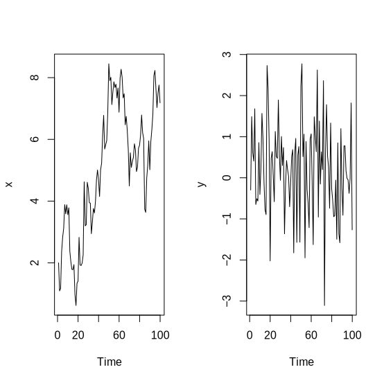Simulate Data
Code
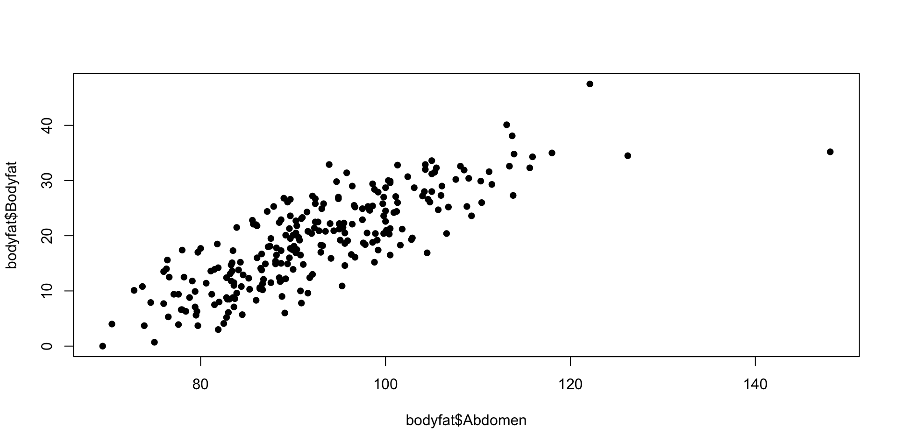
Code
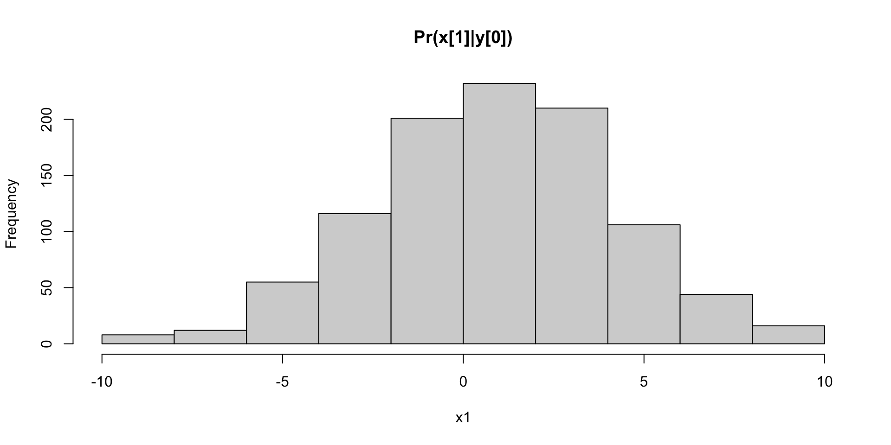
Code

Nonlinear Filtering
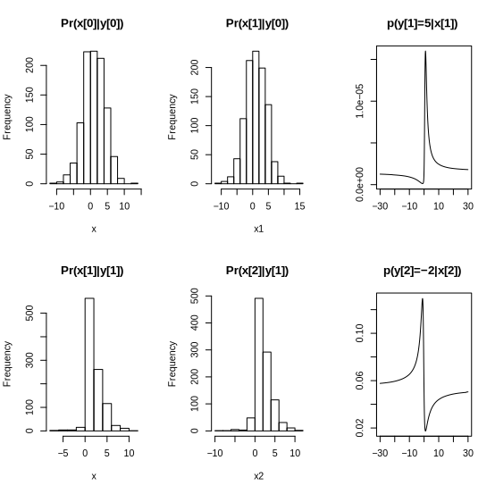Resampling
Key: resample and propagate particles
Code
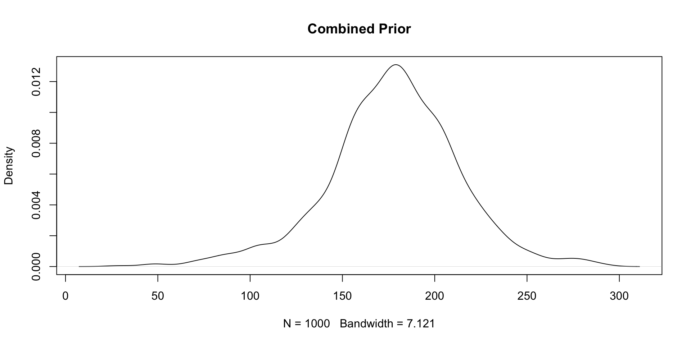
Code
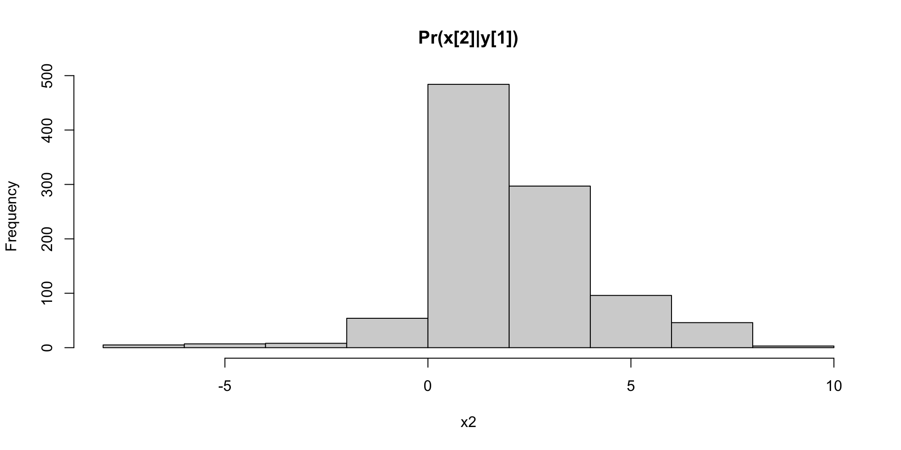
Propagation of MC error
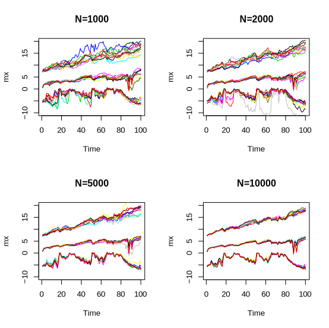Dynamic Linear Model (DLM): Kalman Filter
Kalman filter for linear Gaussian systems
- FFBS (Filter Forward Backwards Sample)
This determines the posterior distribution of the states
\[ p( x_t | y^t ) \; {\rm and} \; p( x_t | y^T ) \] Also the joint distribution \(p( x^T | y^T )\) of the hidden states.
Discrete Hidden Markov Model HMM (Baum-Welch, Viterbi)
With parameters known the Kalman filter gives the exact recursions.
Simulate DLM
Dynamic Linear Models \[ y_t = x_t + v_t \; \; {\rm and} \; \; x_t = \alpha + \beta x_{t-1} + w_t \] Simulate Data
Exact calculations
Kalman Filter recursions
DLM Data
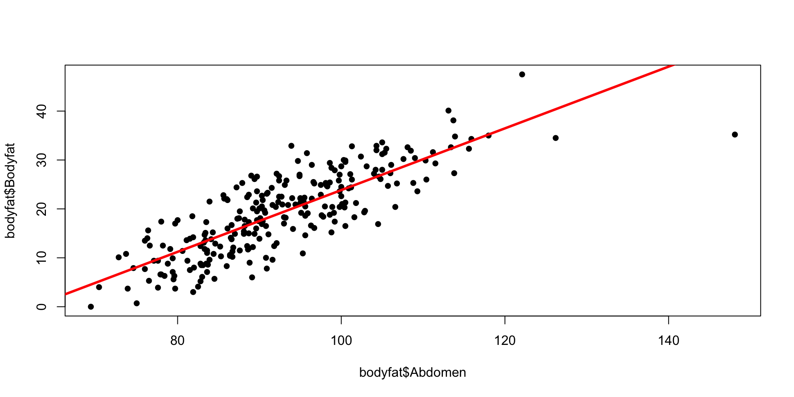Bootstrap Filter
Code
M = 1000
h = rnorm(M,m0,sqrt(C0))
hs = NULL
for (t in 1:T1){
h1 = rnorm(M,alpha+beta*h,sW)
w = dnorm(y[t],h1,sV)
w = w/sum(w)
h = sample(h1,size=M,replace=T,prob=w)
hs = cbind(hs,h)
}
# Quantiles
q025 = function(x){quantile(x,0.025)}
q975 = function(x){quantile(x,0.975)}
h025 = apply(hs,2,q025)
h975 = apply(hs,2,q975)
sd = sqrt(apply(hs,2,var))
m = colMeans(hs)
plot(y,type="b",col="blue",xlab="Time",ylab="y_t", lwd=2, bty='n')
lines(m,col="red")
lines(h025,col="grey",lty=2)
lines(h975,col="grey",lty=2)Streaming Data: How do Parameter Distributions change in Time?
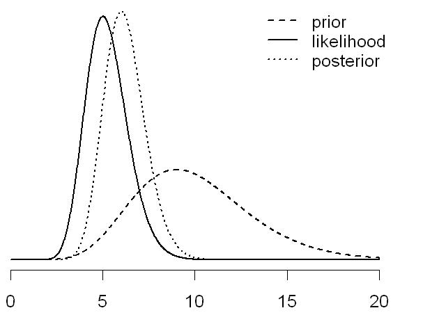 Bayes theorem: \[ p(\theta \mid y^t) \propto p(y_t \mid \theta) \, p(\theta \mid y^{t-1}) \]
Online Dynamic Learning
- Real-time surveillance
- Bayes means sequential updating of information
- Update posterior density \(p(\theta \mid y_t)\) with every new observation (\(t = 1, \ldots, T\)) - “sequential learning”
Galton 1877: First Particle Filter
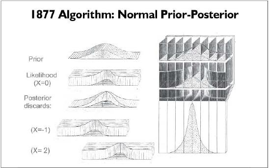Streaming Data: Online Learning
Construct an essential state vector \(Z_{t+1}\). \[ \begin{aligned} p(Z_{t+1}|y^{t+1}) &= \int p(Z_{t+1}|Z_t, y_{t+1}) \;d\mathbb{P}(Z_t|y^{t+1}) \\ &\propto \int \underbrace{p(Z_{t+1}|Z_t, y_{t+1})}_{propagate} \overbrace{ \underbrace{p(y_{t+1} | Z_t)}_{resample} \;d\mathbb{P}(Z_t|y^t)}\end{aligned} \]
Re-sample with weights proportional to \(p(y_{t+1} | Z_t^{(i)})\) and generate \(\{Z_t^{\zeta(i)}\}_{i=1}^N\)
Propagate with \(Z_{t+1}^{(i)} \sim p(Z_{t+1}|Z_t^{\zeta(i)}, y_{t+1})\) to obtain \(\{Z_{t+1}^{(i)}\}_{i=1}^N\)
Parameters: \(p( \theta | Z_{t+1} )\) drawn “offline”
Sample – Resample
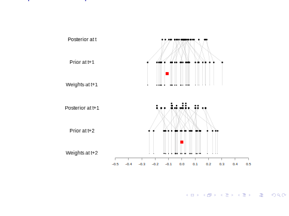sample-resample
Resample – Sample
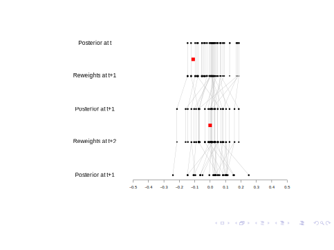resample-sample
Particle Methods: Blind Propagation
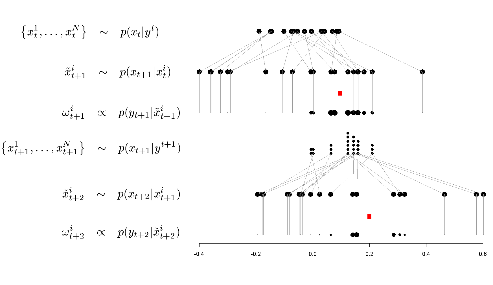Propagate-Resample is replaced by Resample-Propagate
Traffic Problem
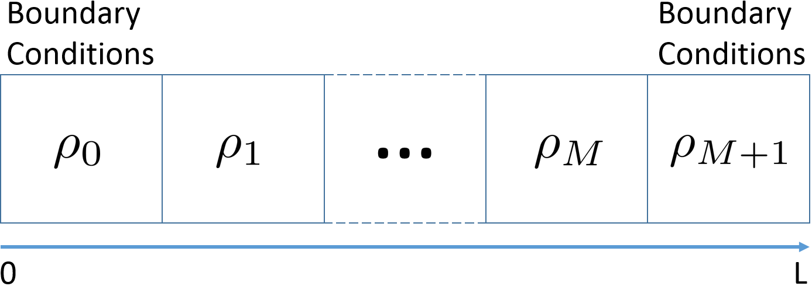State-Space
Wave Speed Propagation is a Mixture Distribution
Shock wave propagation speed is a mixture, when calculated using Godunov scheme \[
w = \frac{q(\rho_l) - q(\rho_r)}{\rho_l-\rho_r} \ \left[\frac{mi}{h}\right] = \left[\frac{veh}{h}\right]\left[\frac{mi}{veh}\right].
\] Assume \(\rho_l \sim TN(32, 16, 0, 320)\) and \(\rho_r \sim TN(48, 16, 0,320)\)
\(q_c = 1600 \ veh/h\), \(\rho_c = 40 \ veh/mi\), and \(\rho_{jam} = 320 \ veh/mi\)
Traffic Flow Speed Forecast is a Mixtrue Dsitribution
Theorem: The solution (including numerical) to the LWR model with stochastic initial conditions is a mixture distribution.
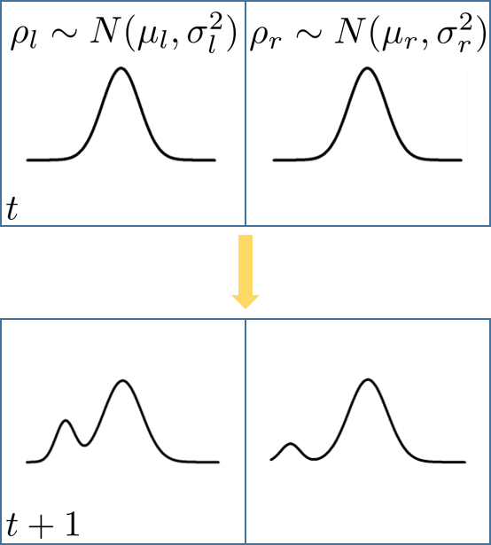A moment based filters such as Kalman Filter or Extended Kalman Filter would not capture the mixture.
Problem at Hand
The Parameter Learning and State Estimation Problem
Goal: given sparse sensor measurements, find the distribution over traffic state and underlying traffic flow parameters \(p(\theta_t, \phi|y_1, y_2,...,y_t); \ \phi=(q_c,\rho_c)\)
Parameters of the evolution equation (LWR) are stochastic
Distribution over state is a mixture
Can’t use moment based filters (KF, EKF,...)
Data Assimilation: State Space Representation
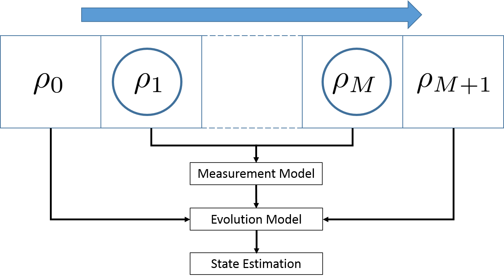State space formulation allows to combine knowledge from analytical model with the one from field measurements, while taking model and measurement errors into account
State Space Representation
State vector \(\theta_t = ( \rho_{1t} , \ldots , \rho_{nt} )\)
Boundary conditionals \(\rho_{0t}\) and \(\rho_{(n+1)t}\)
Underlying parameters \(\phi = (q_c, \rho_c)\) are stochastic
\[\begin{align} \mbox{Observation: }&y_{t+1} = H\theta_{t+1} + v; \ v \sim N(0,V) \label{eqn-y}\\ \mbox{Evolution: }&\theta_{t+1} = f_{\phi}(\theta_t) + w; \ w \sim N(0,W) \label{(eqn-x)} \end{align}\]
\(H: \mathbb{R}^{M} \rightarrow \mathbb{R}^k\) in the measurement model. \(\phi = (q_c,\rho_c, \rho_{max})\).
Parameter priors: \(q_c \sim N(\mu_q, \sigma_c^2)\), \(\rho_c = Uniform(\rho_{min}, \rho_{max})\)
Particle Parameter Learning
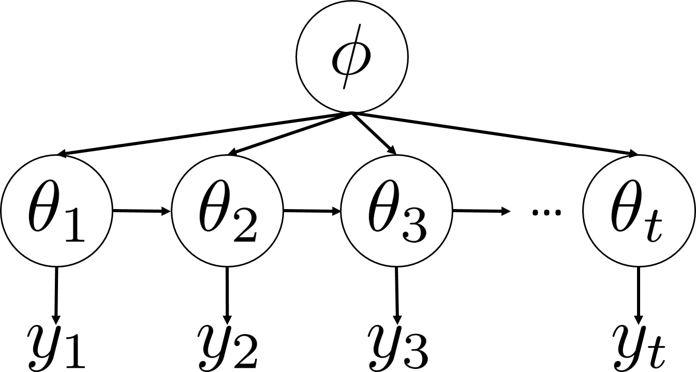Sample-based PDF Representation
Regions of high density: Many particles and Large weight of particles
Uneven partitioning
Discrete approximation for continuous pdf
\[ p^{N}\left( \theta_{t+1}|y^{t+1}\right) \propto \sum_{i=1}^{N}w_{t}^{\left( i\right) }p\left( \theta_{t+1}|\theta_t^{\left( i\right) },y_{t+1}\right) \]
Particle Filter
Bayes Rule: \[ p(y_{t+1},\theta_{t+1}|\theta_t)=p(y_{t+1}|\theta_t)\,p(\theta_{t+1}|% \theta_t,y_{t+1}). \]
- Given a particle approximation to \(p^{N}\left( \theta_t|y^{t}\right)\) \[ \begin{aligned} p^{N}\left( \theta_{t+1}|y^{t+1}\right) & \propto\sum_{i=1}^{N}p\left( y_{t+1}|\theta_t^{\left( i\right) }\right) p\left( \theta_{t+1}|\theta_t^{\left( i\right) },y_{t+1}\right) \label{Mixture2}\\ & =\sum_{i=1}^{N}w_{t}^{\left( i\right) }p\left( \theta_{t+1}|\theta_t^{\left( i\right) },y_{t+1}\right) \text{,}% \end{aligned} \] where
\[ w_{t}^{\left( i\right) }=\frac{p\left( y_{t+1}|\theta_t^{\left( i\right) }\right) }{\sum_{i=1}^{N}p\left( y_{t+1}|\theta_t^{\left( i\right) }\right) }\text{.}% \]
- Essentially a mixture Kalman filter
Particle Parameter Learning
Given particles (a.k.a. random draws) \((\theta^{(i)}_t,\phi^{(i)},s^{(i)}_t),\) \(i=1,\ldots,N\) \[ p( \theta_t | y_{1:t} ) = \frac{1}{N} \sum_{i=1}^N \delta_{ \theta^{(i)} } \; . \]
First resample \((\theta^{k(i)}_t,\phi^{k(i)},s^{k(i)}_t)\) with weights proportional to \(p(y_{t+1}|\theta^{k(i)}_t,\phi^{k(i)})\) and \(s_t^{k(i)}=S(s^{(i)}_t,\theta^{k(i)}_t,y_{t+1})\) and then propogate to \(p(\theta_{t+1}|y_{1:t+1})\) by drawing \(\theta^{(i)}_{t+1}\,\)from \(p(\theta_{t+1}|\theta^{k(i)}_t,\phi^{k(i)},y_{t+1}),\,i=1,\ldots,N\).
Next we update the sufficient statistic as
\[ s_{t+1}=S(s_t^{k(i)},\theta^{(i)}_{t+1},y_{t+1}), \] for \(i=1,\ldots,N\), which represents a deterministic propogation.
- Finally, parameter learning is completed by drawing \(\phi^{(i)}\) using \(p(\phi|s^{(i)}_{t+1})\) for \(i=1,\ldots,N\).
Streaming Data: Online Learning
Construct an essential state vector \(Z_{t+1}\). \[ \begin{aligned} p(Z_{t+1}|y^{t+1}) &= \int p(Z_{t+1}|Z_t, y_{t+1}) \;d\mathbb{P}(Z_t|y^{t+1}) \\ &\propto \int \underbrace{p(Z_{t+1}|Z_t, y_{t+1})}_{propagate} \overbrace{ \underbrace{p(y_{t+1} | Z_t)}_{resample} \;d\mathbb{P}(Z_t|y^t)} \end{aligned} \]
Re-sample with weights proportional to \(p(y_{t+1} | Z_t^{(i)})\) and generate \(\{Z_t^{\zeta(i)}\}_{i=1}^N\)
Propagate with \(Z_{t+1}^{(i)} \sim p(Z_{t+1}|Z_t^{\zeta(i)}, y_{t+1})\) to obtain \(\{Z_{t+1}^{(i)}\}_{i=1}^N\)
Parameters: \(p( \theta | Z_{t+1} )\) drawn “offline”
Resample – Propagate
Algorithm
These ingredients then define a particle filtering and learning algorithm for the sequence of joint posterior distributions \(p( \theta_t , \phi | y_{1:t} )\): \[ \begin{aligned} & \text{Step 1. (Resample) Draw an index } k_t \left( i\right) \sim Mult_{N}\left( w_{t}^{\left( 1\right) },...,w_{t}^{\left( N\right) }\right), \\ & \mbox{where the weights are given by } w_t^{(i)} \propto p(y_{t+1}|(\theta_t,\phi)^{(i)}), \ \text{ for }i=1,...,N\\ \text{ } & \text{Step 2. (Propagate) Draw }\theta_{t+1}^{\left( i\right) }\sim p\left( \theta_{t+1}|\theta_t^{k_t \left( i\right) },y_{t+1}\right) \text{ for }i=1,...,N.\\ \text{ } & \text{Step 3. (Update) } s_{t+1}^{(i)} =S(s_t^{k_t(i)},\theta_{t+1}^{(i)},y_{t+1})\\ \text{ } & \text{Step 4. (Replenish) } \phi^{(i)} \sim p( \phi | s_{t+1}^{(i)} ) \end{aligned} \] There are a number of efficiency gains from such an approach, e.g. it does not suffer from degeneracy problems associated with traditional propagate-resample algorithms when \(y_{t+1}\) is an outliers.
Obtaining state estimates from particles
- Any estimate of a function \(f(\theta_t)\) can be calculated by discrete-approximation
\[ \mbox{E}(f(\theta_t)) = \dfrac{1}{N}\sum_{j=1}^{N}w_t^{(j)}f(\theta_t^{(j)}) \]
- Mean:
\[ \mbox{E}(\theta_t) = \dfrac{1}{N}\sum_{j=1}^{N}w_t^{(j)}\theta_t^{(j)} \]
MAP-estimate: particle with largest weight
Robust mean: mean within window around MAP-estimate
Particle Filters: Pluses
Estimation of full PDFs
Non-Gaussian distributions (multi-modal)
Non-linear state and observation model
Parallelizable
Particle Filters: Minuses
Degeneracy problem
High number of particles needed
Computationally expensive
Linear-Gaussian assumption is often sufficient
Applications: Localization
Track car position in given road map
Track car position from radio frequency measurements
Track aircraft position from estimated terrain elevation
Collision Avoidance (Prediction)
Applications: Model Estimation
Tracking with multiple motion-models
Recovery of signal from noisy measurements
Neural Network model selection (on-line classification)
Applications: Other
Visual Tracking
Prediction of (financial) time series
Quality control in semiconductor industry
Military applications: Target recognition from single or multiple images, Guidance of missiles
Reinforcement Learning
Mixture Kalman Filter For Traffic
\[ \begin{aligned} \mbox{Observation: }&y_{t+1} = Hx_{t+1} + \gamma^Tz_{t+1} + v_{t+1} , \ v_{t+1} \sim N(0, V_{t+1})\\ \mbox{Evolution: }&x_{t+1} = F_{\alpha_{t+1}}x_t + (1-F_{\alpha_{t+1}})\mu + \alpha_t\beta_{t} + \omega_{1} \\ &\beta_{t+1} = \max(0,\beta_{t} + \omega_{2} \label{eqn-beta})\\ \mbox{Switching Evolution: }&\alpha_{t+1} \sim p(\alpha_{t+1} |\alpha_{t},Z_{t}) \end{aligned} \] where \(z_t\) is an exogenous variable that effects the sensor model, \(\mu\) is an average free flow speed \[ \alpha_t \in \{0,1,-1\} \] \[ \omega = (\omega_{1}, \omega_{2})^T \sim N(0, W), \ v \sim N(0,V) \] \[ F_{\alpha_t} = \left\{ \begin{aligned} &1, \ \alpha_t \in \{1,-1\}\\ &F, \ \alpha_t = 0\end{aligned} \right. \] No boundary conditions estimation is needed. No capacity/critical density is needed.